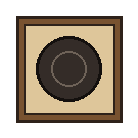
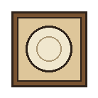
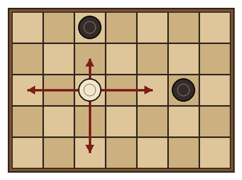
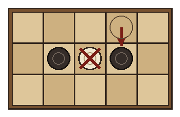
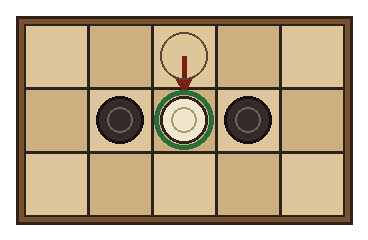
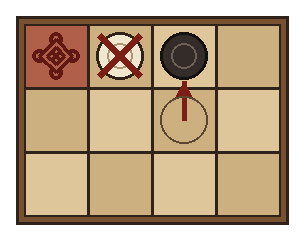
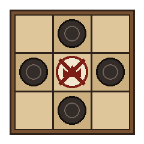
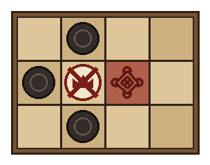

3DNQN · Juegos antiguos
Hnefatafl
El ajedrez vikingo · La mesa del rey
2 jugadores
◆ ❖ ◆
Tenés en tus manos una edición del Hnefatafl diseñada e impresa en 3D. Un rey y su guardia, rodeados por el doble de enemigos, intentan escapar del tablero. Acá encontrás el manual completo para leer desde el celular o descargar.
Preparación



El tablero
Es una cuadrícula de 11 × 11 casillas, simétrica en todas las direcciones. Cuarenta y una casillas están marcadas:
- 24 casillas de ataque, seis en el centro de cada borde, con una pieza oscura cada una.
- 12 casillas de defensa alrededor del centro, cada una con una pieza clara.
- 5 casillas del rey: las cuatro esquinas y el trono central, donde comienza el rey.
El objetivo
Es un juego para 2 jugadores: uno defiende al rey y el otro ataca. Los bandos son desiguales y persiguen metas distintas. Los defensores (claros) ganan si su rey llega a una de las cuatro esquinas. Los atacantes (oscuros) ganan si capturan al rey antes de que escape.
Reglamento
- Quién empieza. Abren siempre los atacantes. Después los jugadores se turnan, moviendo una sola pieza por turno.
- Movimiento. Todas las piezas, incluido el rey, se mueven como la torre del ajedrez: en línea recta, en horizontal o vertical, tantas casillas libres como se quiera. No pueden saltar otras piezas ni moverse en diagonal.
- Casillas del rey. Sólo el rey puede detenerse en el trono y en las esquinas.

- Captura por encierro. Una pieza se captura cuando el rival mueve de modo que la deja atrapada entre dos de sus piezas, una a cada lado, en línea recta. La pieza capturada se retira de inmediato, y con un solo movimiento se pueden capturar varias.
- Sólo captura quien mueve. Una pieza puede meterse por su cuenta entre dos rivales sin ser capturada. Tampoco alcanza con quedar rodeada: sólo cuenta el encierro que provoca un movimiento del rival.
- Las esquinas encierran. Una esquina vacía funciona como una segunda pieza enemiga: una pieza junto a la esquina puede ser capturada por un solo rival.



- El rey en combate. El rey puede participar en las capturas como cualquier otra pieza de su bando.
- Captura del rey. El rey es más difícil de atrapar: hay que rodearlo con piezas oscuras por sus cuatro lados, o por tres lados cuando el cuarto es el trono.


- Fin de la partida. Si el rey alcanza una esquina, ganan los defensores. Si el rey es capturado, ganan los atacantes.
Una partida justa
Como cada bando tiene fuerzas y objetivos distintos, conviene jugar un número par de partidas alternando los papeles: quien defendió en una ataca en la siguiente. Gana el encuentro quien sume más victorias.
Variantes y consejos
Los juegos tafl se jugaron de muchas formas y no existe una única versión correcta. Algunas de las más difundidas:
- Rey al borde: el rey gana con sólo llegar a cualquier borde. Favorece a los defensores.
- Rey desarmado: el rey no puede capturar. Algunas sagas sugieren que así se jugaba.
- Rey débil: se captura entre dos piezas, como cualquier otra. Favorece a los atacantes.
- Rey en la orilla: si el rey está contra un borde, basta rodearlo por los tres lados disponibles.
- Aviso de escape: el defensor lo anuncia en voz alta, como un jaque, cuando el rey tiene camino libre a una esquina.
Consejos
- Atacantes: antes de perseguir capturas, cierren las esquinas formando diagonales de piezas junto a ellas.
- Defensores: abran líneas desde el principio. Si el rey amenaza dos esquinas a la vez, el rival sólo puede tapar una.
Un poco de historia
Hnefatafl significa, aproximadamente, «la mesa del rey»: hnefi es el puño, nombre que recibía la pieza del rey, y tafl es el tablero. Fue el más importante de la familia de juegos tafl, que se jugaban en Escandinavia y el norte de Europa desde los primeros siglos de nuestra era, mucho antes de que llegara el ajedrez.
Los vikingos lo llevaron consigo en sus viajes. Se encontraron tableros y piezas en Noruega, Suecia, Islandia, Gran Bretaña e Irlanda, a veces dentro de tumbas y barcos funerarios, y las sagas islandesas lo mencionan como una destreza digna de nobles y guerreros. Cambió con cada tierra a la que llegó, con tableros desde 7 × 7 hasta 19 × 19 casillas.
Hacia el siglo XI comenzó a ser desplazado por el ajedrez y sus reglas se perdieron. Lo que hoy sabemos combina hallazgos arqueológicos, textos antiguos y bastante conjetura. La pista más valiosa la dejó el naturalista sueco Carl Linneo, que en 1732, durante un viaje por Laponia, anotó las reglas del Tablut, una variante que todavía jugaban los sami.
Mil años después de su apogeo, el juego vive un pequeño renacimiento gracias a clubes, torneos y partidas en línea de todo el mundo.